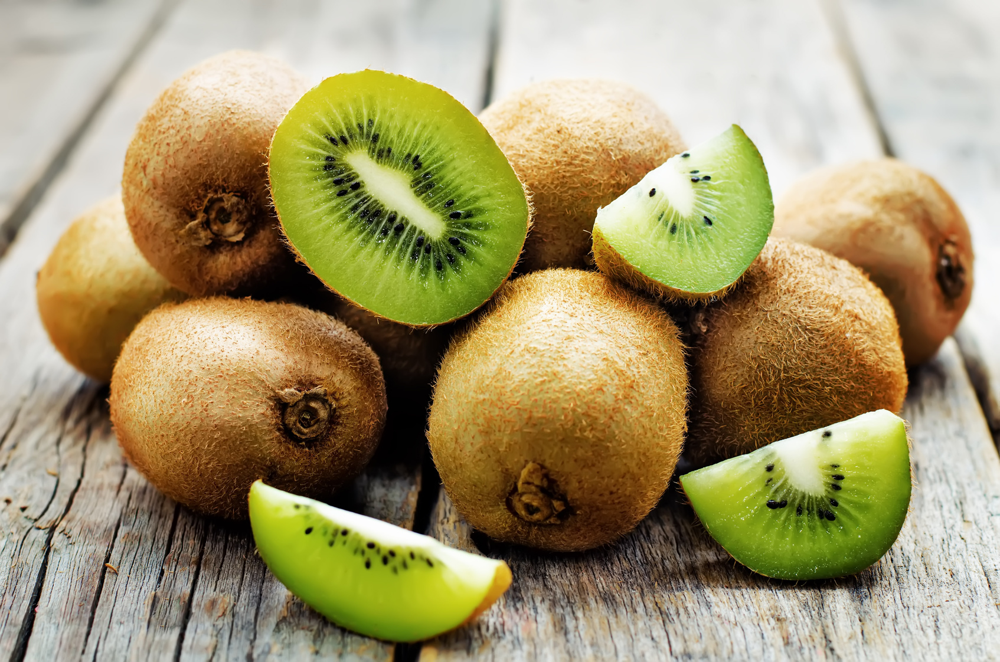
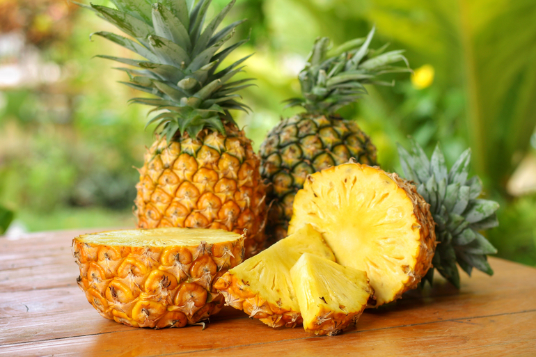
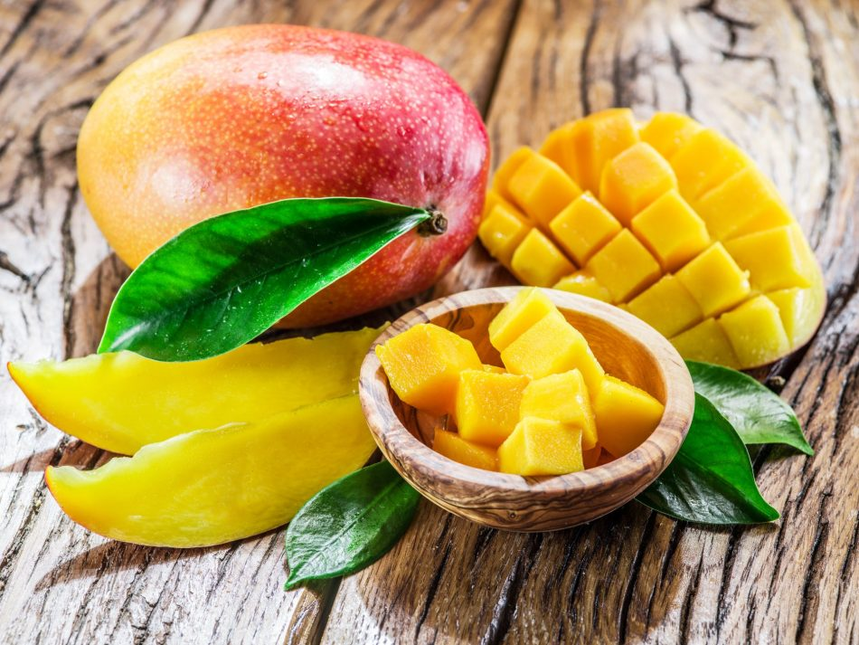

Le nostre offerte invernali!!!

Acquista 1,63€/Kg
Kiwi
In alimentazione per kiwi si intende un frutto esotico (più precisamente una "bacca") prodotto da un genere di "liane" tipiche dell'Asia orientale, le Actinida (famiglia Actinidiaceae), ed in particolar modo dalla Actinidia deliciosa.
Il kiwi è senz'altro un frutto molto "ricco" e si utilizza con duttilità in diversi tipi di regimi alimentari; l'elevato apporto di acqua, di antiossidanti e di potassio gli conferisce una buona applicabilità nella dieta dello sportivo e dell'iperteso, mentre il quantitativo di fibra alimentare sembra agire in maniera positiva sulla motilità intestinale prevenendo la stipsi e probabilmente alcune forme di colon irritabile.
| kiwi, valori per 100g | |
|---|---|
| Energia | 44kcal |
| Fibre | 2,2g |
| Carboidrati | 9,0g |
| Grassi | 0,6g |
| Proteine | 1,2g |
| Acqua | 84,60 |
Acquista 1,63€/Kg

Acquista 3,35€/Kg
Ananas
L'Ananas è una pianta che già Maya, Atzechi e Incas conoscevano e coltivavano. Cristoforo Colombo aveva visto questo frutto a Guadalupa nel 1493. Gli indigeni del Sud America la chiamavano “nana”, i Portoghesi “ananaz”, quindi ananas in italiano, francese e tedesco; per gli Spagnoli era la “piña” per la somiglianza ad una pigna: da qui il termine inglese “pine apple”. Nel XVI secolo lo scrittore spagnolo Fernandez de Oviedo definì l'Ananas come “la donna più bella nel mondo delle piante” in riferimento alla bellezza e alla bontà del frutto.
Le varietà di Ananas sono un centinaio ma si possono riunire in quattro gruppi:
- Cayenne, proveniente dalle Hawaii, a questo gruppo appartiene la “Smooth (liscia) Cayenne” che rappresenta la varietà più diffusa. I frutti hanno la tipica forma cilindrica e sono molto grandi (possono superare anche i 3 kg), di colore giallo pallido, sapore dolcissimo, molto adatti all'inscatolamento.
- Spanish, di origine caraibica, a questo gruppo appartiene la “Red Spanish”. I frutti presentano una buccia arancione, la polpa è un po' fibrosa ma molto aromatica.
- Quenn, coltivata soprattutto in Africa. I frutti sono piuttosto piccoli (circa 1 kg), con polpa gialla e aroma intenso.
- Abacaxi viene coltivata quasi esclusivamente per il consumo fresco e venduta nei mercati locali dell'America Latina, dove è molto richiesta. Ha caratteristiche diverse dalle altre varietà.
| Ananas, valori per 100g | |
|---|---|
| Energia | 50kcal |
| Fibre | 0,15g |
| Carboidrati | 13g |
| Grassi | 0,1g |
| Proteine | 0,50g |
| Acqua | 86,40g |
Acquista 3,35€/Kg

Acquista 4,85€/Kg
Mango
Il mango è il frutto della Mangifera indica, una specie appartenente alla famiglia della Anacardiaceae originaria del Sudest asiatico oggi coltivata, nelle sue numerose varietà, in diverse parti del mondo. Attualmente il produttore principale di mango è il Messico. Anche in Italia ne esistono coltivazioni.
Il mango è una buona fonte di vitamina C, vitamine, minerali e di fibre alimentari. Fra le sue proprietà sono incluse attività antinfiammatorie e antimicrobicrobiche dovute alla presenza di flavonoidi come la quercetina, cui sono state associate anche proprietà antitumorali, antipertensive e antiaterosclerotiche. Sembra inoltre che il consumo di mango aiuti a tenere sotto controllo i livelli di zuccheri nel sangue, almeno in caso di obesità.
| Mango, valori per 100g | |
|---|---|
| Energia | 47,20kcal |
| Fibre | 1,60g |
| Carboidrati | 12,60g |
| Grassi | 0,20g |
| Proteine | 1g |
| Acqua | 82,80g |
Acquista 4,85€/Kg